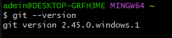

What is Git?
Git
is a distributed version control system (VCS) that helps developers manage
changes to their codebase. Unlike traditional VCSs, Git thinks about data
as a stream of snapshots. Each snapshot represents the entire project at a
specific point in time. This approach makes Git unique and efficient.
Here are some key points about Git:
-
Version Control System: Git allows you to track changes
to your code over time. It keeps a history of modifications, making it
easier to collaborate with others and manage complex projects.
-
Distributed: Git is distributed, meaning that every
developer has a complete copy of the repository on their local machine.
This decentralization enables offline work and faster operations.
-
Snapshots, Not Differences: Git stores data as
snapshots of the entire project, rather than just the differences
between versions. This approach improves performance and simplifies
merging and branching.
-
Branching and Merging: Git excels at creating branches
for different features or bug fixes. Developers can work on separate
branches and merge them back into the main codebase when ready.
Other Version Control Systems
While Git is widely used, there are other VCSs worth mentioning:
-
Mercurial SCM: Similar to Git, Mercurial is a
distributed VCS. It efficiently handles projects of any size and offers
an easy-to-use command-line interface. Some users find it easier to use,
especially on Windows.
-
Fossil: Fossil combines version control, bug tracking,
and wiki software. It's simple, reliable, and self-hosted. If you're
looking for an all-in-one solution, Fossil might be worth exploring.
-
Subversion (SVN): Unlike Git, SVN follows a centralized
model. It's widely used in enterprise environments but lacks some of
Git's features. SVN is known for its simplicity and ease of use.
-
Helix Core: Previously known as Perforce, Helix Core is
a commercial VCS used by large organizations. It's robust and scalable,
but not open source.
Remember, in this blog, we'll focus on Git and GitHub. Git is the tool,
and GitHub is the platform where you can host your Git repositories,
collaborate with others, and manage your projects. Happy coding! 😊🚀
Installing Git
Checking whether Git is installed:
Run the command: git --version

How to download Git:
Click here to visit the website
Configuring Git
To configure your github run the following commands:
git config --global user.name "name"

git config --global user.email "email@gmail.com"

Intializing a Git repository:
Git repository is a fundamental component of version control systems
like Git. Let's break it down:
-
What Is Git?
- Git is a distributed version control system used to
manage source code and track changes over time.
- Developers collaborate on repositories to maintain the history of
project modifications.
-
Features of Git:
- Efficient Local Operations:
- Git performs most operations locally, ensuring speed and efficiency.
- Lightweight branching allows parallel development.
- Optimized merging simplifies integrating changes from different
branches.
Git Security:
- Data integrity is ensured through cryptographic hashing.
- Access controls restrict user access and prevent unauthorized
modifications. - Secure protocols (SSH and HTTPS) enable safe data
exchange.
Flexibility:
- Decentralized development allows independent work with complete local
copies.
- Flexible branching strategies accommodate various development
processes.
- Easy experimentation and rollback.
-
Version Control with Git:
- A Version Control System (VCS) tracks file versions
and stores them in a repository.
- The process of copying content
from an existing Git repository using various Git tools is called
cloning.
- A Git repository is the `.git/` folder
inside a project, tracking all changes made to project files and
building a history over time.
In summary, a Git repository is a central storage location for managing
and tracking changes in files and directories. It enables collaborative
development, allowing multiple developers to work on a project
simultaneously. For more info visit:
geeksforgeeks
Adding files
Adding files to the staging area
What is staging
The staging area in Git is an
intermediate step between making changes to files and capturing snapshots
of these updates. It's sometimes also referred to as the
Git Index
To stage the a file run the command:
git add < filename >

To stage all files in a directory, run the command:
git add .

Tracked Files
- Tracked files are the ones that Git knows about and includes in the
version control system.
- These files were part of the last snapshot
(commit) and have a version history.
- Tracked files can be in one
of three states:
- Unmodified: The file content is the same as in the last
commit.
- Modified: The file content has changed since the last
commit, but the changes are not yet staged.
- Staged: The modified file changes have been added to
the staging area and are ready for the next commit.
- Examples of
tracked files include source code files, configuration files, and
documentation files.
To check if file is tracked run the command:
git status

The tracked files are highlighted in green
Untracked Files
- Untracked files are not part of the Git repository.
- They do not
have a version history, and Git does not manage them.
- Untracked files are everything else in your working directory that was
not in the last snapshot (commit) and is not in the staging area.
- Common examples of untracked files are build artifacts, temporary files,
and user-specific configuration files.
- You can add untracked files
to the `.gitignore` file to prevent Git from asking you whether you want
to track them.
In summary, tracked files are under Git's control, while untracked files
are not included in the version history and are typically files you don't
want to be managed by Git. Remember that Git helps you manage changes to
tracked files, but untracked files are left untouched until you explicitly
decide to include them or ignore them. 😊🚀
To check is files are untracked run the command:
$ git ls-tree -r master --name-only

Commiting changes
Understanding Commits:
- A commit in Git is like a snapshot of your entire repository at a
specific point in time.
- You should create new commits often, based on logical units of change.
- Over time, commits tell the story of your repository’s history and how
it evolved.
Best Practices:
Make commits atomic and logical. Each commit should represent a specific
idea or change.
Craft your commit messages thoughtfully. They should be descriptive and
concise.
Remember that commits are lightweight and Git can handle many of them,
even across multiple files.
To make a commit run the command:
git commit -m "message"
Branches
What is a Branch in Git?
In Git, a branch is like a lightweight movable pointer to a specific
commit. It represents an independent line of development within a project.
Here’s an analogy: think of a tree with its branches. The trunk represents
the main part of the tree, while the branches extend from it. Similarly,
in Git: The trunk corresponds to the main branch (usually called the
master branch). Branches create additional lines of development that are
separate from the main branch. When you create a new branch, it allows you
to work on a new feature, bug fix, or experiment without affecting the
stable codebase. The main branch remains untouched while you develop in
isolation.
Why Do We Need Branches in Git?
- Parallel Development: Imagine you’re working on a project with your team.
Each team member can create their own branch to work on specific tasks.
For example, Alice creates a branch for a new feature, Bob works on a bug
fix in a separate branch, and Carol experiments with an enhancement. These
branches allow team members to collaborate simultaneously without
interfering with each other’s work.
- Isolation and Testing: When you create
a branch, you can develop and test changes without affecting the main
codebase. Once your feature or fix is complete, you merge it back into the
main branch.
- Versioning and History: Git branches provide a clear history
of changes. Each branch represents a specific set of modifications. You
can easily switch between branches to view different versions of your
project.
- Experimentation and Prototyping: Branches allow you to experiment
with ideas without risking the stable codebase. Create a branch, try out
different approaches, and discard it if needed.
- Bug Fixes and Features: If
a critical bug is discovered, create a branch to fix it. Once verified,
merge it back. For new features, develop them in separate branches to keep
the main branch stable.
Creating a branch
To create a branch run the command:
git branch < branch-name >

Viewing all branches
To view all branches run the command:
git branch

Switching active branches
You can use the following commands to switch between branches:
git checkout < branch-name >

Merging a branch
Use the git merge command to merge the changes from the source branch into the target branch:
git merge < source-branch >

Replace < source-branch > with the name of the branch you want to merge. For instance:
git merge feature/my-feature

Deleting a branch
To delete a branch run the command:
$ git branch -d < local-branch-name >

Next steps
Certainly! After learning the basics of Git, there are several important next steps you can take to enhance your proficiency and become a more effective Git user. Let’s explore some recommendations:
- Explore Advanced Git Topics:
Dive deeper into Git by learning about more advanced topics:
Git Rebase: Understand how rebasing works and when to use it. It allows you to modify commit history and integrate changes more cleanly.
Git Cherry-Pick: Learn how to apply specific commits from one branch to another.
Git Stash: Explore how to temporarily save changes that you’re not ready to commit.
Git Hooks: Discover pre-commit, post-commit, and other hooks to automate tasks.
Git Submodules and Subtrees: Understand how to manage dependencies within your repository.
-
Collaborate on GitHub or GitLab:
Practice collaborating with others using Git platforms like GitHub or GitLab:
Forking Repositories: Fork a repository, make changes, and create pull requests.
Pull Requests (PRs): Learn how to create, review, and merge PRs.
Issue Tracking: Explore how issues are managed in repositories.
Branch Protection Rules: Understand how to enforce branch protection rules for better collaboration.
-
Version Control Best Practices:
Adopt best practices to maintain a clean and efficient Git workflow:
Commit Frequently: Make small, meaningful commits with descriptive messages.
Use Meaningful Branch Names: Choose descriptive names for branches.
Avoid Force Pushing: Be cautious with force pushes, especially on shared branches.
Gitignore Files: Create a .gitignore file to exclude unnecessary files from version control.
Atomic Commits: Each commit should represent a single logical change.